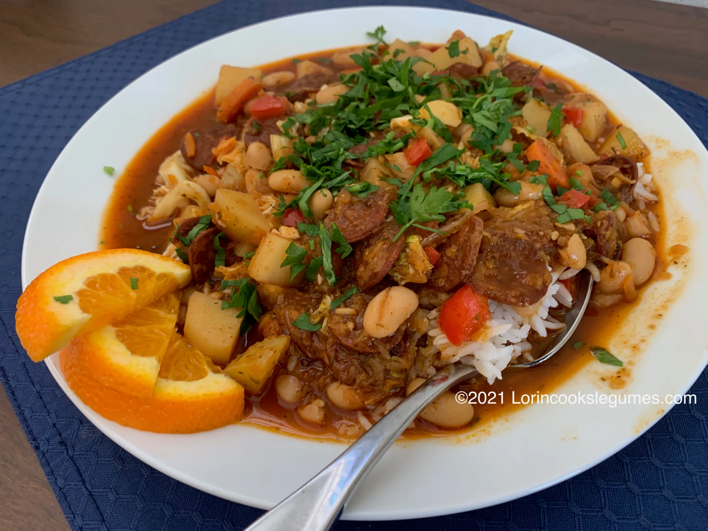

Koto Timor-Leste

Feijoada (Portuguese pronunciation: [fejʒuˈadɐ]) is a stew of beans with beef and pork. The name feijoada comes from feijão, ‘bean’ in Portuguese. It is widely prepared in the Portuguese-speaking world, with slight variations.
Feijoada à Timorense is a hearty, deeply aromatic bean and meat stew that represents a unique culinary fusion in Timor-Leste. While its roots trace directly back to the 16th-century Portuguese colonization of the island, the dish has been thoroughly adapted to match the agricultural landscape and flavor preferences of the Southeast Asian nation.
Ingredients
- 4 Tablespoons olive oil,1 chorizo sausage, thinly sliced
- 1-2 red or yellow onions, sliced
- Tablespoons fresh ginger, grated or minced
- 5-6 cloves garlic, minced
- 2 carrots, sliced
- 2 Thai bird chilis, finely chopped
- 1 red bell pepper, diced
- 1 sweet potato, grated
- 4 small potatoes, chopped
- 1 vegetable bouillon cube
- 1-2 15 oz. cans cannellini, kidney or black beans, with liquid
- 2 teaspoons ground cumin
- 2 teaspoons red chili powder
- 3 teaspoons coriander seed
- 3 teaspoons smoked paprika
- 1 ½ teaspoons black pepper, or to taste
- 4 teaspoons dried thyme
- ¼ small head cabbage, roughly chopped
- 2 Tablespoons soy sauce
- 2 Tablespoons kecap manis
- Juice of 1 lime
- Salt to taste
- 2 hand-fulls Italian parsley, minced
- Rice, cooked
- 1 orange, sliced
Below is step-by-step on how to make this savory dish!
- Heat olive oil in a large heavy pot over medium heat, and sauté chorizo until fat renders. Add onion and sauté until lightly browned.
- Add ginger, sauté for about 30 seconds, then add the garlic and cook for another 30 seconds. Add carrots, Thai chlies, bell pepper, sweet potato and potatoes. Add the bouillon cube and enough water to barely cover everything. Bring to a boil, reduce heat and simmer for 10-15 minutes, until carrots and potatoes are tender.
- Add the beans, with their liquid, and the spices and herbs. Simmer for another 10 minutes.
- Add the cabbage and simmer for another 5 minutes or so.
- Add the soy sauces, squeeze in the lime, and taste for salt.
- Garnish with parsley and serve over hot cooked rice, with orange slices on the side.
Home